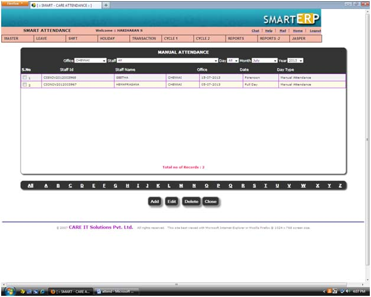
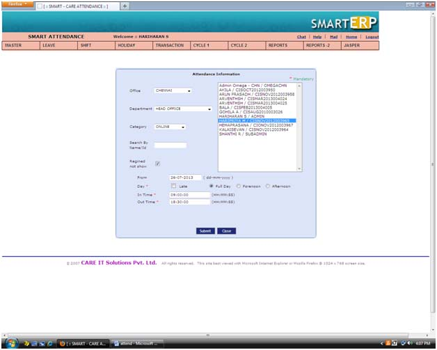

|
||
Manual Attendance |
||
| This is Manual attendance view screen. We can add,delete the Manual attendance | ||
| To add a new Manual attendance by click the add button | ||
| To delete a manual attendance by click delete buttonTo delete a manual attendance by click delete button | ||
| To filtered Manual attendance by alphabetically,month, year,date,staff,office | ||
|  | ||
Manual attendance Add |
||
| To add a new Manual attendance by click the add button in Manual attendance view screen. | ||
| Choose the employee name and day | ||
| Select the from date and to date | ||
| Enter the In time and out time | ||
| The * mark symbol are mandatory. | ||
| The * mark field validate when click the submit button | ||
| Click the submit button. | ||
| The manual attendance successfully added. | ||
|  |